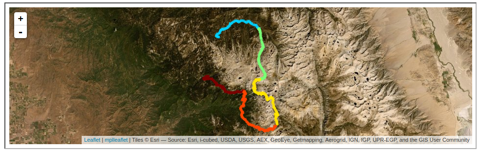

Adding a map

Today i worked on adding a map generated from .gpx files using Python in jupyter notebook and mplleaflet. It took a while to filter the data to avoid mapping the drive also, and it is slow when plotting all 12000 gps points
Example code for making a mplleaflet map of the hiking trail
# import dependencies and load gps coordiates from ,gpx files
%matplotlib notebook
from PhotoTrails import *
import os
from glob import glob
path = os.getcwd()
TripName='1910_SEKI'
paths=PhotoTrailsls(path=path,TripName=TripName,DoPrint=False)
gpx_data=load_gpx_data(gpx_path=paths.get("Trails")+'/')
# filter based on datetime stamp
df=df[(df['datetime'] > '2019-10-02 16:00:00') & (df['datetime'] < '2019-10-06 12:25:00')]
# plot with a different color for each day hiked
fig, ax = plt.subplots()
colors = plt.cm.jet(np.linspace(0,1,len(df.groupby('Day'))+2))
cc=0
for idx, day in df.groupby('Day'):
plt.plot(day['Point_Longitude'][::10], day['Point_Latitude'][::10], color=colors[idx], linewidth=0, alpha=0.5,marker='*')
cc=cc+1
mplleaflet.save_html(fig=fig,fileobj='mplleaflet_simpel.html',tiles='esri_aerial')
mplleaflet.display(fig=fig, tiles='esri_aerial')
I will go oiver the PhotoTrails.py library another time as i am trying to make some general scripts. Basically for this purpose I load several .gpx files from a folder into pandas dataframes